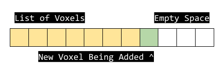
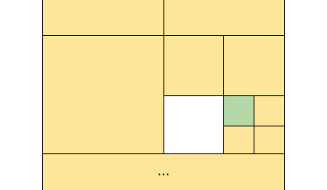
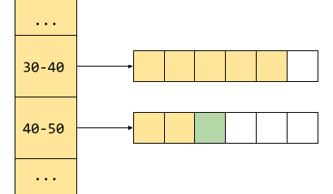
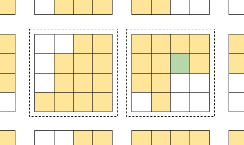

Data Structures
Voxel engines come in many flavors. I want to compare and consider a few data structures for voxel data to find which is the most appropriate for this project.
WebVoxel Considerations
To accomplish WebVoxel’s goal, the engine should be flexible enough to have many video game genres and mechanics layered on top, but must balance that against complexity. Here are some common ways in which the data structure will be important to a game developer building upon the engine:
- Navigation. Players and NPC’s alike will be navigating the world in a manner specific and custom to the game.
- Interaction. For some games, the voxel terrain may be nothing more than a solid static world, but for others interaction may be extremely high.
- Rendering Performance. Every single game is going to be rendering the voxel scenes, but how dynamic the scene needs to be can have a big impact on how it is rendered.
One important observation in all of these is the need to quickly traverse the immediate neighborhood of any given point in space, that is, querying every voxel in the moore neighborhood of another voxel. Such traversal is used on physics, AI, lighting, pathfinding, and many general game elements. It’s important to understand the distinction between the terms iteration and traversal.
Iteration is visiting every single voxel, the order is irrelevant. The minimum theoretical time to iterate an entire set of voxels is O(n) where n is the total amount of voxels.
Traversal is visiting voxels in an order not determined ahead of time, such as visiting the neighborhood of a given voxel. The work of a voxel engine is equal parts iteration and traversal, therefor each data structure will be judged on those two requirements. Roughly speaking, traversal is the same as random access, though some data structures are faster to access nearby data. Traversal is measured per voxel traversed.
Breakdown
Any complexity in the data structure could be abstracted, but any game will have custom demands that are not suitable for a base engine and it’s extremely important that any custom mechanics are not made more difficult by the complexity of the engine.
So let’s take a look at 4 data structures which seem suitable. When using big-O notation, n will indicate the total amount of voxels in our scene.
Data Structure: List

The simplest data structure would be simply a list of voxels, specifying coordinate and type. Objects in game engines are almost always tracked in lists, as are particles. Lists are inclusive of a few data structures, from flat contiguous arrays, to linked list, to a heap that remains always sorted via some book-keeping during modifications.
Pros
+ The simplest in concept, adding a voxel to the world means adding it to a list
+ Fast iteration and creation of voxels
+ Memory usage scales with the amount of voxels
+ Iteration is O(n)
Cons:
- Extremely slow random access by coordinate, therefor slow traversal
- Space inefficient for dense voxel scenes
- Search time scales with voxel count at more than a constant rate
- Performance can be improved at a rapid cost of increased complexity
- Traversal in the average case is O(log n)
For hundreds of voxels, perhaps thousands, the characteristics of a list are quite nice and in some cases will outperform the other options. For example, if voxels act more like particles with very high energy, moving from frame to frame, and only get deleted during iteration, this structure might be ideal.
Lists are immediately rejected as a candidate due to one major flaw, the scaling characteristics of traversal. Looking up a neighboring voxel is no faster than any random access, which is implemented as a search. While iteration is our desired O(n), traversal is a pretty bad O(log n).
Data Structure: Octree

This is the go-to data structure for sparse data, ie, data that tends to clump together. The short explanation is that octrees are a tree, where each branch encompasses a different region of space. If all of the data contained in a branch is the same, the branch is a “leaf” and has no children. If the data is varied, though, the branch if split into 8 smaller branches, each of which acts the same.
In terms of voxels, this means large areas with identical voxels would be stored as a single leaf node, and only more detailed/varied areas would have deeper branches. The deeper the branches can go, the more detail you can represent.
Pros:
+ Extremely space efficient, capable of storing billions of voxels
+ Changes to the tree provide deltas, efficient for networking
+ Fast to raytrace, as large areas are skipped at each step
+ Iteration is sort of O(log n) with a twist
Cons:
- Random access for a given coordinate is slow, especially when writing
- Relatively complex to work with
- Fixed size, tho new octrees could be created as needed for an infinite space
- Traversal in the average case is O(log n)
Octrees are a tough contender, as they can be abstracted to provide random access queries, but at a performance cost. Collision detection gets a bonus here, as bounding-box queries into an octree can be the fastest of the options. The networking capability is another bonus, as octrees naturally provide contained deltas for any changes. When it comes to iteration, octrees are interesting: their nature allows for large regions of identical voxels to be skipped or treated as identical without needing to iterate them individually, but it may be hard to utilize that property in practice, though raytracing fully utilizes this property to achieve realtime performance.
However, the complexity of octrees will undoubtedly leak to the game developer, and two of the pros are irrelevant in the context of a browser game which should not require hardware sufficient for raytracing nor interaction of billions of voxels.
Data Structure: Hash Maps

When you think of needing to index into a set of data, a hash map might seem like a viable data structure. The basic premise is that you create a key from the data to look at a specific bucket, then iterate that bucket to find the data you’re looking for.
Pros:
+ Easy to use, implemented natively in most languages
+ Iteration is O(n)
+ Traversal in the average case is O(1)
Cons: - Space inefficient, as voxels need to store coordinate - Traversal time on average has a high constant factor
Hash Maps seem like a good candidate in general, however internally there is a lot of book-keeping which applies to every read and write. There is no concept of locality, so traversal to a neighbor is the same as a random lookup. One major drawback is how the structure scales - more voxels mean more buckets, which means the buckets need to be rebalanced, which can have quite a high cost. If anything about this data structure is a show stopper, it’s the memory overhead, which is a very high constant of O(n) not only due to the coordinates taking up space for each voxel, but the buckets and their padding taking up extra space.
Data Structure: Pages

Pages are often called chunks in the context of voxels. With pages, space is divided into an even grid, which is paged in and out of memory as needed. All of the pages would represent the same amount of space, and is at minimum a large flat buffer where each element in the buffer is one voxel.
For any given coordinate you can determine the page and index within that page with constant time math. Reading or writing to that index is also constant time, and extremely fast.
Pros:
+ Conceptually very simple
+ Fast, constant-time read and write operations
+ Naturally infinite in all dimensions
+ Iteration is O(n)
+ Traversal is O(1)
Cons:
- Space inefficient, constant size regardless of data
- Fixed world space partition size (fixed voxel size)
Paging is the strongest contender, mainly due to it’s balanced approach. The complexity is small, as the most naive and obvious way to work with the structure will usually be the correct one. The space requirements would often be problematic, but in the context of web-based games, the amount of voxels will be small. Constant-time operations will help deliver smooth, uninterrupted gameplay. Also, the main issue unique to pages is the scale of the voxels, which in the context of web-games can be considered a positive. Interactions and game rules will only need to consider voxels with a fixed size, and level or scene development will be kept consistent and predictable.
Conclusion
| Comparison | Space | Traversal | Iteration | Complexity |
|---|---|---|---|---|
| Lists | O(2n) |
O(log n) |
O(n) |
Medium |
| Octrees | O(log n) |
O(log n) |
O(log n)* |
High |
| Hash Maps | O(2n) |
O(1)* |
O(n) |
Low |
| Pages | O(n) |
O(1) |
O(n) |
Low |
To summarize these structures: lists are superceded by hash maps, and are only favorable for high-energy voxels; octrees are brilliant for everything but random access; hash maps are a simple solution but have unpredictable random access; and pages are space inefficient but predictable and simple in all other ways. One interesting observation is that hash maps and pages are extremely similar - they are both a contiguous list of voxels, partitioned by their coordinate. Pages are essentially a hash map, where the buckets are fixed-size to allow for addressing by coordinate rather than searching, which is exactly how they are implemented.
For WebVoxel, pages seem to be the most reasonable solution. Web-based games are generally small in scope and complexity, because they target consumers with low-powered hardware, such as phones and laptops. They generally require low player commitment, and so the gameplay should be simple to learn quickly, which can be helped by fixed-size voxels. The benefits of a more complex data structure will never be realized in a web-based game. Runtime performance becomes important, but due to the size and detail of the scenes, memory is not much of a concern. Finally, predictability is a key asset, as we can now know ahead of time how the game developer will be using the voxel engine.
That is why the core data structure of WebVoxel is buffers indexed by coordinate and paged in or out as needed.